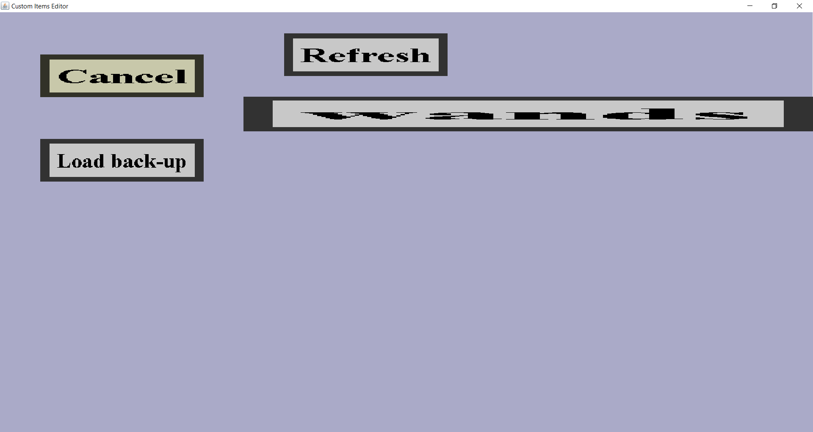

In the item set selection menu, you can choose an existing item set to edit. If you would have a single item set named 'wands' on your computer, it would look like this:
By default, this menu has 3 buttons: 'Refresh', 'Cancel' and 'Load back-up'. The 'Cancel' button will simply bring you back to the main menu. The 'Refresh' button will refresh the list of item sets that is shown. The 'Load back-up' button will bring you to the back-up selection menu where you can load a back-up of an item set.
Additionally, there is a button for each item set on your computer, in this case a single button 'wands' because I had a single item set called 'wands' at the time of making that screenshot. Clicking on such a button will bring you to the item set edit menu for that item set. If you want to load an item set that didn't exist before starting the editor, you can click on the 'Refresh' button to refresh this list of item sets.